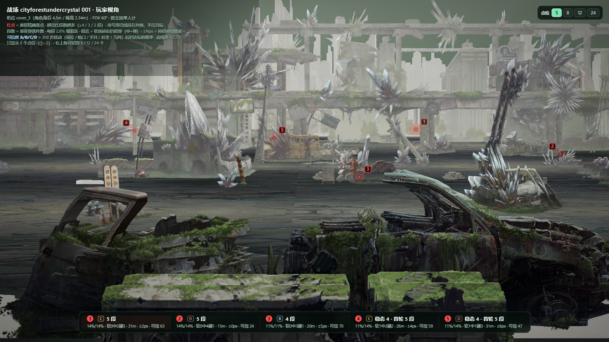
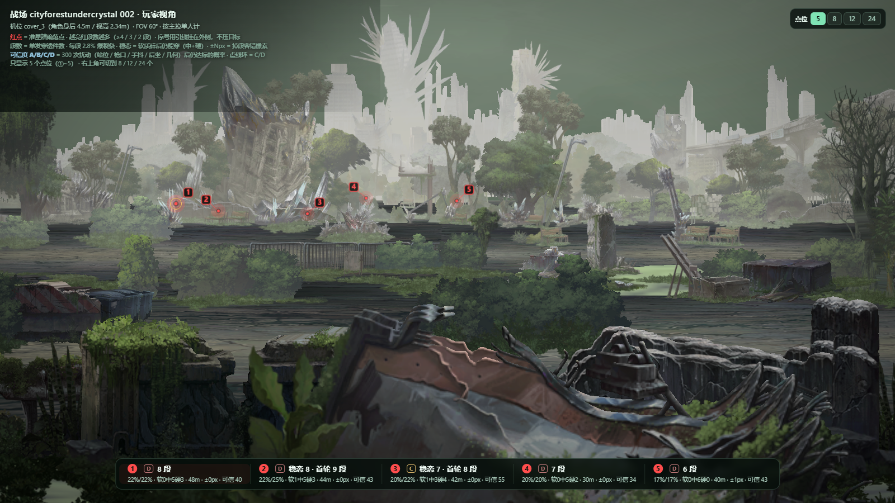
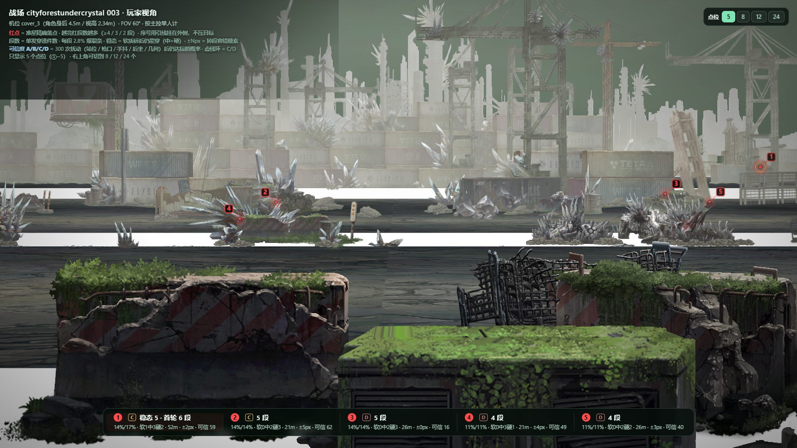
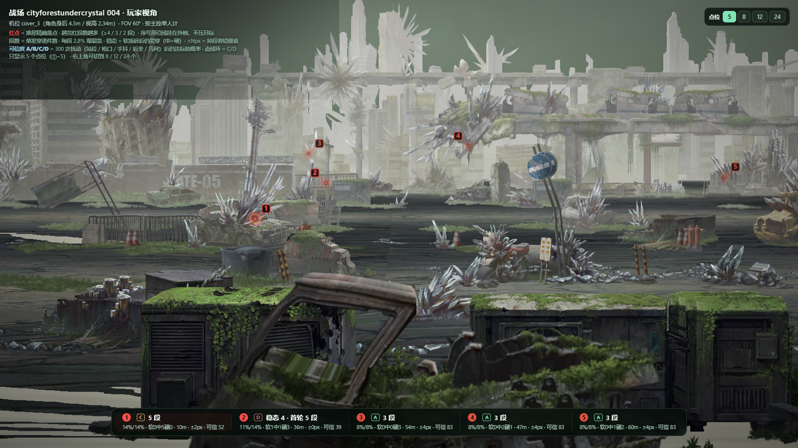
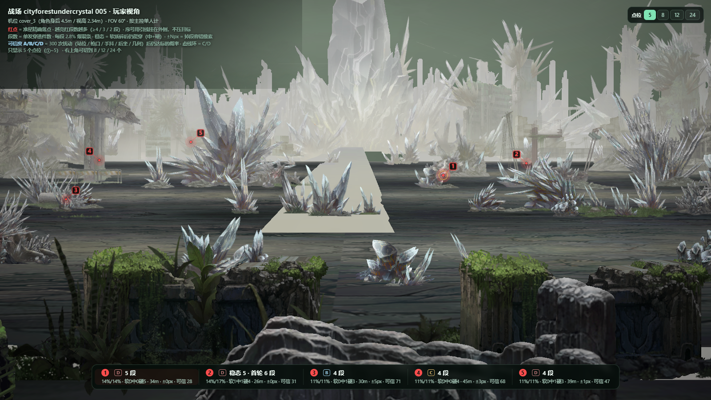

五张战场全部从客户端 sbg_cityforestundercrystal_001~005 原生还原：
顶点、三角索引、父链 TRS、掩体锚点都取自拆包数据，不是手绘示意。机位取 cover_3.camera_position
（角色身后 4.5m、视高 2.34m、沿 +z、FOV 60°），图里 ①~⑤ 是屏幕上能直接压的位置。
这一章有个反常：段数最高的点（8 段）容错锥只有 0.7~1.2px，实战基本压不住；
锥宽 ≥8px 的点段数全是 2~4。所以本页把「段数榜」和「实战榜」并列给出。
同一张图上，「单发穿透最多」和「真能稳定打中」在这批场景里几乎互斥。 原因在几何：34 章的受击体常常排成一条延伸到 45~55m 的细长队列，只要射线与这排物件共线， 一发能穿 7~8 件；可这条「共线走廊」在屏幕上只有 1~2 像素宽，纵向更窄 —— 段数是纸面最优，锥宽才决定能不能落上去。
| 战场 | 段数冠军 审计等级 | 实战冠军（≥3 段里锥最宽） 审计等级 / 可信度 | 两者差 |
|---|---|---|---|
| 001 | 1 号 | 3 号 | 差 1 段 |
| 002 | 2 号 | 22 号 | 差 5 段 |
| 003 | 2 号 | 2 号 | 一致 |
| 004 | 1 号 | 7 号 | 差 2 段 |
| 005 | 2 号 | 14 号 | 差 2 段 |
两套等级别混：这里的审计等级（S/A/B/C/D）只看几何容错与阵位可用；下面点位表里的可信度（A/B/C/D + 分数）来自 300 次随机扰动，看的是「抖一抖还活不活」。两者经常不一致 —— 锥窄但抖动小的点会「审计 D、可信度 A」。
链路与 35 章（沼泽丛林）一致，数据源换成 spotbackground(hd)_assets_sbg_cityforestundercrystal_00N：
core_catalog.sqlite 查 file_id → store.cdb.idx 取偏移 →
adb dd 定点读 → zstd 解压 → 按 file_offset 拼 UnityFS bundle。SpotSingleMap 的分组树归类：soft/medium/hard 是可充能受击体，
static_object/ground 只挡弹，cover_object 是我方掩体（不作判定点）。cover_1~cover_5 的世界变换，相机取各自的 camera_position。| 战场 | 三角面 | 受击体 | 遮挡三角 | 掩体 件/占画面 | 纵向扫描 ° | 视差 中位° | 视差 最大° | 被挡点数 |
|---|---|---|---|---|---|---|---|---|
| 001 | 18996 | 144 | 18932 | 15 件 / 36% | 72 | 3.7 | 14.1 | 9 |
| 002 | 40440 | 168 | 8448 | 15 件 / 29% | 82 | 3.2 | 17.0 | 0 |
| 003 | 20512 | 146 | 10512 | 15 件 / 36% | 96 | 2.8 | 8.4 | 13 |
| 004 | 19792 | 126 | 14344 | 15 件 / 28% | 72 | 3.3 | 14.7 | 8 |
| 005 | 17872 | 100 | 11260 | 15 件 / 26% | 77 | 3.7 | 16.4 | 2 |
「被挡点数」= 那个点在五个阵位里至少有一个被自家/相邻掩体遮断（0.4~4m 处截断）的点数。 这五张图的掩体占画面 26~36%，和 35 章的 35~43% 是同一量级，换阵位失效依旧是主要坑。

camera_position = (0.6, 0.00, 0.0) ·
视高 2.34m（地面 y = −2.34）· 沿 +z · 竖直 FOV 60° ·
相机与枪口视差 中位 3.7° / 最大 14.1°（近景必须按像素反推，不能直接扫枪口角度）| 号 | 稳态 段数 | 首轮 段数 | 稳态 %/轮 | 首轮 %/轮 |
软/中/硬 | 首击 | 容错 px 横/纵 | 可信度 | 聚焦 段数 | 特性 | c1 | c2 | c3 | c4 | c5 |
|---|---|---|---|---|---|---|---|---|---|---|---|---|---|---|---|
| 1 | 5 | 5 | 14.0% | 14.0% | 023 | 31m | 2.8 | C63 | 5 | 不掉段高稳态窄窗1/5阵位 | 0 | 0 | 5 | 0 | 0 |
| 2 | 5 | 5 | 14.0% | 14.0% | 041 | 15m | 1.7 | D24 | 13 | 不掉段高稳态窄窗近景4/5阵位 | 2 | 2 | 5 | 1 | 3 |
| 3 | 4 | 4 | 11.2% | 11.2% | 031 | 20m | 11.6 | B70 | 15 | 不掉段高稳态4/5阵位 | 3 | 4 | 4 | 0 | 4 |
| 4 | 4 | 5 | 11.2% | 14.0% | 122 | 26m | 5.2 | C59 | 22 | 高稳态5/5阵位 | 5 | 4 | 4 | 4 | 3 |
| 5 | 4 | 5 | 11.2% | 14.0% | 113 | 31m | 2.4 | D47 | 15 | 高稳态4/5阵位 | 3 | 0 | 4 | 2 | 2 |
| 6 | 4 | 5 | 11.2% | 14.0% | 140 | 30m | 0.4 | D31 | 19 | 高稳态窄窗5/5阵位 | 2 | 2 | 4 | 2 | 4 |
| 7 | 4 | 4 | 11.2% | 11.2% | 031 | 15m | 2.0 | D32 | 10 | 不掉段高稳态窄窗近景3/5阵位 | 1 | 3 | 4 | 0 | 2 |
| 8 | 4 | 4 | 11.2% | 11.2% | 022 | 30m | 4.9 | D31 | 9 | 不掉段高稳态窄窗2/5阵位 | 1 | 1 | 4 | 1 | 2 |
| 9 | 4 | 4 | 11.2% | 11.2% | 022 | 25m | 0.3 | D22 | 10 | 不掉段高稳态窄窗3/5阵位 | 1 | 1 | 4 | 2 | 2 |
| 10 | 4 | 4 | 11.2% | 11.2% | 031 | 47m | 0.0 | D18 | 11 | 不掉段高稳态窄窗远景4/5阵位 | 2 | 3 | 4 | 0 | 2 |
| 11 | 3 | 3 | 8.4% | 8.4% | 012 | 64m | 1.7 | C56 | 15 | 不掉段高稳态窄窗远景全阵位 | 3 | 3 | 3 | 3 | 3 |
| 12 | 3 | 3 | 8.4% | 8.4% | 021 | 43m | 2.0 | D39 | 13 | 不掉段高稳态窄窗远景4/5阵位 | 3 | 0 | 3 | 3 | 3 |
| 13 | 3 | 4 | 8.4% | 11.2% | 130 | 21m | 66.8 | D42 | 14 | 高稳态窄窗5/5阵位 | 3 | 2 | 3 | 2 | 2 |
| 14 | 3 | 3 | 8.4% | 8.4% | 030 | 16m | 1.6 | D28 | 13 | 不掉段高稳态窄窗近景5/5阵位 | 3 | 2 | 3 | 2 | 3 |
| 15 | 2 | 2 | 5.6% | 5.6% | 002 | 69m | 20.6 | B79 | 10 | 不掉段抗手抖远景全阵位 | 2 | 2 | 2 | 2 | 2 |
| 16 | 2 | 2 | 5.6% | 5.6% | 020 | 14m | 24.3 | B72 | 6 | 不掉段抗手抖近景3/5阵位 | 2 | 0 | 2 | 0 | 2 |
| 17 | 2 | 3 | 5.6% | 8.4% | 111 | 19m | 2.0 | C65 | 10 | 窄窗4/5阵位 | 3 | 0 | 2 | 2 | 2 |
| 18 | 2 | 2 | 5.6% | 5.6% | 011 | 15m | 10.1 | C63 | 6 | 不掉段抗手抖近景1/5阵位 | 1 | 1 | 2 | 1 | 1 |
| 19 | 2 | 2 | 5.6% | 5.6% | 020 | 50m | 3.6 | D50 | 10 | 不掉段远景全阵位 | 2 | 2 | 2 | 2 | 2 |
| 20 | 2 | 2 | 5.6% | 5.6% | 020 | 24m | 24.4 | C55 | 11 | 不掉段抗手抖全阵位 | 2 | 2 | 2 | 2 | 2 |
| 21 | 2 | 2 | 5.6% | 5.6% | 011 | 28m | 7.5 | C52 | 8 | 不掉段3/5阵位 | 1 | 1 | 2 | 2 | 2 |
| 22 | 2 | 2 | 5.6% | 5.6% | 020 | 21m | 18.6 | D52 | 7 | 不掉段抗手抖3/5阵位 | 2 | 2 | 2 | 0 | 1 |
| 23 | 2 | 2 | 5.6% | 5.6% | 002 | 70m | 5.4 | D44 | 10 | 不掉段抗手抖远景全阵位 | 2 | 2 | 2 | 2 | 2 |
| 24 | 2 | 3 | 5.6% | 8.4% | 120 | 26m | 15.1 | D46 | 16 | 全阵位 | 2 | 2 | 2 | 2 | 2 |
轮换：可破坏物池 51 件 = 143% 爆裂条
一枪碎（A）需 10 发 / 走过 10 个点 · 每次上限 30（B）8 发 / 1 个点
推荐顺序 1 → 2 → 6 → 3 → 4 → 5 → 8 → 10 → 11 等 9 个点（9 发，按编号顺序要 10 发，省 1 发）
稳态 = 软质目标碎掉后仍能穿透的段数（中 + 硬），决定持续充能；
首轮 = 全目标完好时的段数。容错 横/纵 = 准星偏离这颗像素多少还能保住标称段数
（四方向取最小，绕开相机独立测；红色表示纵向 <2.5px，基本稳不住）。
可信度 = 300 次随机扰动下的达标率/可用率/P10 合成分（A≥80 B≥68 C≥52 D<52）。
c1~c5 = 五个阵位各自的单发段数，红色的 0 = 该阵位被自家或相邻高掩体挡住。
①~⑤ 首选，⑥ 起为补充：换了站位、被挡住、或要描远处目标时顶上；
页面顶部切换条决定显示几个。

camera_position = (0.6, 0.00, 0.0) ·
视高 2.34m（地面 y = −2.34）· 沿 +z · 竖直 FOV 60° ·
相机与枪口视差 中位 3.2° / 最大 17.0°（近景必须按像素反推，不能直接扫枪口角度）| 号 | 稳态 段数 | 首轮 段数 | 稳态 %/轮 | 首轮 %/轮 |
软/中/硬 | 首击 | 容错 px 横/纵 | 可信度 | 聚焦 段数 | 特性 | c1 | c2 | c3 | c4 | c5 |
|---|---|---|---|---|---|---|---|---|---|---|---|---|---|---|---|
| 1 | 8 | 8 | 22.4% | 22.4% | 053 | 48m | 0.2 | D40 | 37 | 不掉段高稳态窄窗远景5/5阵位 | 6 | 8 | 8 | 8 | 6 |
| 2 | 8 | 9 | 22.4% | 25.2% | 153 | 44m | 1.2 | D43 | 39 | 高稳态窄窗远景5/5阵位 | 7 | 7 | 8 | 6 | 6 |
| 3 | 7 | 8 | 19.6% | 22.4% | 134 | 42m | 0.1 | C55 | 37 | 高稳态窄窗远景全阵位 | 7 | 7 | 7 | 7 | 7 |
| 4 | 7 | 7 | 19.6% | 19.6% | 052 | 30m | 1.3 | D34 | 23 | 不掉段高稳态窄窗5/5阵位 | 5 | 4 | 7 | 4 | 3 |
| 5 | 6 | 6 | 16.8% | 16.8% | 060 | 40m | 1.9 | D43 | 27 | 不掉段高稳态窄窗远景5/5阵位 | 3 | 6 | 6 | 5 | 6 |
| 6 | 6 | 7 | 16.8% | 19.6% | 160 | 19m | 2.8 | D47 | 30 | 高稳态窄窗5/5阵位 | 4 | 6 | 6 | 5 | 4 |
| 7 | 6 | 7 | 16.8% | 19.6% | 151 | 37m | 0.6 | D38 | 26 | 高稳态窄窗5/5阵位 | 4 | 3 | 6 | 5 | 3 |
| 8 | 6 | 6 | 16.8% | 16.8% | 051 | 54m | 0.6 | D34 | 24 | 不掉段高稳态窄窗远景5/5阵位 | 3 | 6 | 6 | 5 | 4 |
| 9 | 6 | 6 | 16.8% | 16.8% | 033 | 15m | 0.3 | D10 | 17 | 不掉段高稳态窄窗近景3/5阵位 | 5 | 1 | 6 | 1 | 2 |
| 10 | 5 | 5 | 14.0% | 14.0% | 050 | 42m | 8.1 | A84 | 25 | 不掉段高稳态远景5/5阵位 | 5 | 5 | 5 | 4 | 5 |
| 11 | 5 | 5 | 14.0% | 14.0% | 050 | 58m | 3.2 | A84 | 22 | 不掉段高稳态远景5/5阵位 | 5 | 5 | 5 | 3 | 3 |
| 12 | 5 | 6 | 14.0% | 16.8% | 150 | 34m | 3.7 | C63 | 22 | 高稳态5/5阵位 | 2 | 4 | 5 | 3 | 3 |
| 13 | 5 | 5 | 14.0% | 14.0% | 050 | 51m | 1.9 | D50 | 18 | 不掉段高稳态窄窗远景5/5阵位 | 3 | 4 | 5 | 3 | 3 |
| 14 | 5 | 7 | 14.0% | 19.6% | 250 | 18m | 3.1 | D37 | 23 | 高稳态窄窗5/5阵位 | 5 | 3 | 5 | 3 | 3 |
| 15 | 5 | 5 | 14.0% | 14.0% | 032 | 42m | 41.6 | D32 | 23 | 不掉段高稳态窄窗远景5/5阵位 | 5 | 5 | 5 | 4 | 4 |
| 16 | 4 | 4 | 11.2% | 11.2% | 040 | 41m | 4.3 | A85 | 18 | 不掉段高稳态窄窗远景5/5阵位 | 3 | 4 | 4 | 4 | 3 |
| 17 | 4 | 4 | 11.2% | 11.2% | 031 | 44m | 4.8 | A84 | 22 | 不掉段高稳态窄窗远景全阵位 | 5 | 4 | 4 | 4 | 5 |
| 18 | 4 | 4 | 11.2% | 11.2% | 031 | 56m | 0.3 | C65 | 21 | 不掉段高稳态抗手抖远景5/5阵位 | 5 | 5 | 4 | 3 | 3 |
| 19 | 4 | 6 | 11.2% | 16.8% | 240 | 47m | 2.9 | C66 | 26 | 高稳态远景5/5阵位 | 2 | 4 | 4 | 3 | 2 |
| 20 | 4 | 4 | 11.2% | 11.2% | 031 | 49m | 1.2 | D46 | 20 | 不掉段高稳态窄窗远景全阵位 | 4 | 4 | 4 | 4 | 4 |
| 21 | 4 | 5 | 11.2% | 14.0% | 140 | 45m | 0.3 | D37 | 18 | 高稳态窄窗远景5/5阵位 | 3 | 3 | 4 | 2 | 2 |
| 22 | 3 | 5 | 8.4% | 14.0% | 221 | 17m | 11.8 | C64 | 21 | 高稳态近景4/5阵位 | 6 | 4 | 3 | 2 | 1 |
| 23 | 3 | 6 | 8.4% | 16.8% | 321 | 29m | 4.4 | D31 | 22 | 高稳态窄窗5/5阵位 | 3 | 3 | 3 | 2 | 3 |
| 24 | 3 | 5 | 8.4% | 14.0% | 221 | 17m | 3.6 | D32 | 21 | 高稳态窄窗近景5/5阵位 | 2 | 2 | 3 | 3 | 3 |
轮换：可破坏物池 48 件 = 134% 爆裂条
一枪碎（A）需 8 发 / 走过 8 个点 · 每次上限 30（B）5 发 / 1 个点
推荐顺序 2 → 3 → 4 → 7 → 23 → 6 → 19 等 7 个点（7 发，按编号顺序要 8 发，省 1 发）
稳态 = 软质目标碎掉后仍能穿透的段数（中 + 硬），决定持续充能；
首轮 = 全目标完好时的段数。容错 横/纵 = 准星偏离这颗像素多少还能保住标称段数
（四方向取最小，绕开相机独立测；红色表示纵向 <2.5px，基本稳不住）。
可信度 = 300 次随机扰动下的达标率/可用率/P10 合成分（A≥80 B≥68 C≥52 D<52）。
c1~c5 = 五个阵位各自的单发段数，红色的 0 = 该阵位被自家或相邻高掩体挡住。
①~⑤ 首选，⑥ 起为补充：换了站位、被挡住、或要描远处目标时顶上；
页面顶部切换条决定显示几个。

camera_position = (0.6, 0.00, 0.0) ·
视高 2.34m（地面 y = −2.34）· 沿 +z · 竖直 FOV 60° ·
相机与枪口视差 中位 2.8° / 最大 8.4°（近景必须按像素反推，不能直接扫枪口角度）| 号 | 稳态 段数 | 首轮 段数 | 稳态 %/轮 | 首轮 %/轮 |
软/中/硬 | 首击 | 容错 px 横/纵 | 可信度 | 聚焦 段数 | 特性 | c1 | c2 | c3 | c4 | c5 |
|---|---|---|---|---|---|---|---|---|---|---|---|---|---|---|---|
| 1 | 5 | 6 | 14.0% | 16.8% | 132 | 52m | 6.9 | C59 | 27 | 高稳态窄窗远景5/5阵位 | 5 | 5 | 5 | 5 | 4 |
| 2 | 5 | 5 | 14.0% | 14.0% | 023 | 21m | 10.0 | C62 | 21 | 不掉段高稳态5/5阵位 | 5 | 4 | 5 | 4 | 3 |
| 3 | 5 | 5 | 14.0% | 14.0% | 023 | 26m | 1.1 | D16 | 10 | 不掉段高稳态窄窗2/5阵位 | 3 | 0 | 5 | 0 | 1 |
| 4 | 4 | 4 | 11.2% | 11.2% | 031 | 21m | 6.7 | D49 | 16 | 不掉段高稳态5/5阵位 | 4 | 2 | 4 | 3 | 3 |
| 5 | 4 | 4 | 11.2% | 11.2% | 022 | 26m | 5.0 | D40 | 8 | 不掉段高稳态2/5阵位 | 3 | 0 | 4 | 0 | 1 |
| 6 | 4 | 4 | 11.2% | 11.2% | 022 | 47m | 4.3 | D29 | 10 | 不掉段高稳态窄窗远景3/5阵位 | 3 | 3 | 4 | 0 | 0 |
| 7 | 4 | 4 | 11.2% | 11.2% | 022 | 22m | 0.1 | D16 | 10 | 不掉段高稳态窄窗2/5阵位 | 1 | 0 | 4 | 0 | 2 |
| 8 | 4 | 4 | 11.2% | 11.2% | 013 | 62m | 4.7 | D19 | 11 | 不掉段高稳态远景2/5阵位 | 1 | 1 | 4 | 4 | 1 |
| 9 | 3 | 3 | 8.4% | 8.4% | 012 | 40m | 8.6 | B71 | 13 | 不掉段高稳态5/5阵位 | 3 | 3 | 3 | 2 | 2 |
| 10 | 3 | 3 | 8.4% | 8.4% | 012 | 84m | 35.1 | B70 | 13 | 不掉段高稳态窄窗远景4/5阵位 | 4 | 3 | 3 | 0 | 3 |
| 11 | 3 | 4 | 8.4% | 11.2% | 112 | 22m | 1.7 | C64 | 8 | 高稳态窄窗2/5阵位 | 1 | 0 | 3 | 0 | 2 |
| 12 | 3 | 3 | 8.4% | 8.4% | 003 | 63m | 5.2 | C60 | 11 | 不掉段高稳态窄窗远景5/5阵位 | 2 | 2 | 3 | 2 | 2 |
| 13 | 3 | 3 | 8.4% | 8.4% | 021 | 63m | 2.7 | D43 | 12 | 不掉段高稳态窄窗远景5/5阵位 | 2 | 3 | 3 | 2 | 2 |
| 14 | 3 | 3 | 8.4% | 8.4% | 012 | 20m | 23.6 | C52 | 12 | 不掉段高稳态4/5阵位 | 3 | 0 | 3 | 3 | 3 |
| 15 | 3 | 3 | 8.4% | 8.4% | 012 | 49m | 3.1 | D38 | 8 | 不掉段高稳态窄窗远景3/5阵位 | 1 | 2 | 3 | 0 | 2 |
| 16 | 3 | 3 | 8.4% | 8.4% | 012 | 73m | 9.5 | D50 | 15 | 不掉段高稳态远景全阵位 | 3 | 3 | 3 | 3 | 3 |
| 17 | 3 | 4 | 8.4% | 11.2% | 112 | 30m | 0.2 | D19 | 9 | 高稳态窄窗3/5阵位 | 2 | 0 | 3 | 0 | 2 |
| 18 | 3 | 3 | 8.4% | 8.4% | 012 | 32m | 6.9 | D18 | 7 | 不掉段高稳态2/5阵位 | 2 | 1 | 3 | 0 | 1 |
| 19 | 2 | 4 | 5.6% | 11.2% | 211 | 19m | 33.2 | C61 | 12 | 抗手抖3/5阵位 | 2 | 0 | 2 | 0 | 2 |
| 20 | 2 | 4 | 5.6% | 11.2% | 202 | 23m | 4.9 | C53 | 11 | 2/5阵位 | 2 | 0 | 2 | 0 | 1 |
| 21 | 2 | 2 | 5.6% | 5.6% | 002 | 62m | 4.7 | D40 | 10 | 不掉段窄窗远景全阵位挡1段 | 2 | 2 | 2 | 2 | 2 |
| 22 | 2 | 3 | 5.6% | 8.4% | 111 | 23m | 16.6 | C55 | 11 | 4/5阵位 | 2 | 2 | 2 | 2 | 1 |
| 23 | 2 | 4 | 5.6% | 11.2% | 202 | 25m | 12.9 | D32 | 11 | 窄窗2/5阵位 | 1 | 0 | 2 | 0 | 2 |
| 24 | 2 | 3 | 5.6% | 8.4% | 102 | 45m | 4.6 | D33 | 12 | 远景2/5阵位 | 1 | 1 | 2 | 1 | 2 |
轮换：可破坏物池 53 件 = 148% 爆裂条
一枪碎（A）需 11 发 / 走过 11 个点 · 每次上限 30（B）7 发 / 1 个点
推荐顺序 1 → 2 → 3 → 7 → 19 → 4 → 6 → 8 → 12 等 10 个点（10 发，按编号顺序要 11 发，省 1 发）
稳态 = 软质目标碎掉后仍能穿透的段数（中 + 硬），决定持续充能；
首轮 = 全目标完好时的段数。容错 横/纵 = 准星偏离这颗像素多少还能保住标称段数
（四方向取最小，绕开相机独立测；红色表示纵向 <2.5px，基本稳不住）。
可信度 = 300 次随机扰动下的达标率/可用率/P10 合成分（A≥80 B≥68 C≥52 D<52）。
c1~c5 = 五个阵位各自的单发段数，红色的 0 = 该阵位被自家或相邻高掩体挡住。
①~⑤ 首选，⑥ 起为补充：换了站位、被挡住、或要描远处目标时顶上；
页面顶部切换条决定显示几个。

camera_position = (0.6, 0.00, 0.0) ·
视高 2.34m（地面 y = −2.34）· 沿 +z · 竖直 FOV 60° ·
相机与枪口视差 中位 3.3° / 最大 14.7°（近景必须按像素反推，不能直接扫枪口角度）| 号 | 稳态 段数 | 首轮 段数 | 稳态 %/轮 | 首轮 %/轮 |
软/中/硬 | 首击 | 容错 px 横/纵 | 可信度 | 聚焦 段数 | 特性 | c1 | c2 | c3 | c4 | c5 |
|---|---|---|---|---|---|---|---|---|---|---|---|---|---|---|---|
| 1 | 5 | 5 | 14.0% | 14.0% | 050 | 10m | 2.9 | C52 | 19 | 不掉段高稳态窄窗近景5/5阵位 | 3 | 3 | 5 | 4 | 4 |
| 2 | 4 | 5 | 11.2% | 14.0% | 113 | 36m | 1.5 | D39 | 17 | 高稳态窄窗4/5阵位 | 2 | 2 | 4 | 3 | 1 |
| 3 | 3 | 3 | 8.4% | 8.4% | 003 | 54m | 6.4 | A82 | 12 | 不掉段高稳态远景4/5阵位 | 0 | 4 | 3 | 3 | 2 |
| 4 | 3 | 3 | 8.4% | 8.4% | 021 | 47m | 5.8 | A83 | 16 | 不掉段高稳态远景全阵位 | 3 | 3 | 3 | 3 | 3 |
| 5 | 3 | 3 | 8.4% | 8.4% | 012 | 60m | 3.8 | A83 | 15 | 不掉段高稳态远景全阵位 | 3 | 3 | 3 | 3 | 3 |
| 6 | 3 | 3 | 8.4% | 8.4% | 030 | 10m | 28.0 | C63 | 14 | 不掉段高稳态抗手抖近景5/5阵位 | 2 | 3 | 3 | 3 | 2 |
| 7 | 3 | 3 | 8.4% | 8.4% | 003 | 46m | 22.0 | C66 | 15 | 不掉段高稳态抗手抖远景全阵位 | 3 | 3 | 3 | 3 | 3 |
| 8 | 3 | 4 | 8.4% | 11.2% | 130 | 10m | 6.1 | C53 | 12 | 高稳态近景3/5阵位 | 1 | 1 | 3 | 3 | 3 |
| 9 | 3 | 3 | 8.4% | 8.4% | 003 | 17m | 7.0 | C58 | 9 | 不掉段高稳态抗手抖近景3/5阵位 | 3 | 0 | 3 | 0 | 3 |
| 10 | 3 | 3 | 8.4% | 8.4% | 012 | 7m | 13.8 | C56 | 6 | 不掉段高稳态近景2/5阵位 | 2 | 0 | 3 | 0 | 1 |
| 11 | 3 | 4 | 8.4% | 11.2% | 121 | 20m | 4.9 | C52 | 17 | 高稳态5/5阵位 | 2 | 3 | 3 | 2 | 3 |
| 12 | 3 | 3 | 8.4% | 8.4% | 003 | 29m | 3.4 | D38 | 13 | 不掉段高稳态窄窗5/5阵位 | 3 | 2 | 3 | 2 | 2 |
| 13 | 3 | 4 | 8.4% | 11.2% | 103 | 46m | 1.0 | D32 | 16 | 高稳态窄窗远景4/5阵位 | 2 | 2 | 3 | 2 | 1 |
| 14 | 3 | 3 | 8.4% | 8.4% | 030 | 12m | 3.7 | D31 | 8 | 不掉段高稳态窄窗近景3/5阵位 | 3 | 0 | 3 | 0 | 2 |
| 15 | 3 | 5 | 8.4% | 14.0% | 203 | 26m | 2.3 | D35 | 13 | 高稳态2/5阵位 | 0 | 0 | 3 | 2 | 0 |
| 16 | 3 | 3 | 8.4% | 8.4% | 012 | 11m | 12.2 | D34 | 11 | 不掉段高稳态近景5/5阵位 | 2 | 2 | 3 | 2 | 2 |
| 17 | 3 | 3 | 8.4% | 8.4% | 030 | 19m | 4.0 | D30 | 11 | 不掉段高稳态窄窗3/5阵位挡1段 | 0 | 1 | 3 | 3 | 4 |
| 18 | 3 | 3 | 8.4% | 8.4% | 003 | 35m | 3.2 | D27 | 12 | 不掉段高稳态窄窗5/5阵位 | 3 | 2 | 3 | 2 | 2 |
| 19 | 3 | 3 | 8.4% | 8.4% | 003 | 42m | 1.1 | D27 | 14 | 不掉段高稳态抗手抖远景5/5阵位 | 2 | 3 | 3 | 3 | 3 |
| 20 | 3 | 3 | 8.4% | 8.4% | 021 | 6m | 7.7 | D12 | 8 | 不掉段高稳态窄窗近景3/5阵位 | 2 | 2 | 3 | 0 | 0 |
| 21 | 2 | 4 | 5.6% | 11.2% | 211 | 26m | 19.8 | B72 | 11 | 2/5阵位 | 1 | 1 | 2 | 1 | 2 |
| 22 | 2 | 4 | 5.6% | 11.2% | 220 | 12m | 7.6 | B70 | 7 | 窄窗近景2/5阵位 | 2 | 0 | 2 | 0 | 1 |
| 23 | 2 | 4 | 5.6% | 11.2% | 220 | 15m | 8.9 | C62 | 9 | 抗手抖近景3/5阵位 | 2 | 0 | 2 | 0 | 2 |
| 24 | 2 | 5 | 5.6% | 14.0% | 311 | 13m | 6.8 | D24 | 20 | 窄窗近景4/5阵位 | 2 | 2 | 2 | 2 | 1 |
轮换：可破坏物池 55 件 = 154% 爆裂条
一枪碎（A）需 13 发 / 走过 13 个点 · 每次上限 30（B）8 发 / 1 个点
推荐顺序 1 → 2 → 24 → 15 → 23 → 4 → 5 → 9 → 10 等 10 个点（10 发，按编号顺序要 13 发，省 3 发）
稳态 = 软质目标碎掉后仍能穿透的段数（中 + 硬），决定持续充能；
首轮 = 全目标完好时的段数。容错 横/纵 = 准星偏离这颗像素多少还能保住标称段数
（四方向取最小，绕开相机独立测；红色表示纵向 <2.5px，基本稳不住）。
可信度 = 300 次随机扰动下的达标率/可用率/P10 合成分（A≥80 B≥68 C≥52 D<52）。
c1~c5 = 五个阵位各自的单发段数，红色的 0 = 该阵位被自家或相邻高掩体挡住。
①~⑤ 首选，⑥ 起为补充：换了站位、被挡住、或要描远处目标时顶上；
页面顶部切换条决定显示几个。

camera_position = (0.6, 0.00, 0.0) ·
视高 2.34m（地面 y = −2.34）· 沿 +z · 竖直 FOV 60° ·
相机与枪口视差 中位 3.7° / 最大 16.4°（近景必须按像素反推，不能直接扫枪口角度）| 号 | 稳态 段数 | 首轮 段数 | 稳态 %/轮 | 首轮 %/轮 |
软/中/硬 | 首击 | 容错 px 横/纵 | 可信度 | 聚焦 段数 | 特性 | c1 | c2 | c3 | c4 | c5 |
|---|---|---|---|---|---|---|---|---|---|---|---|---|---|---|---|
| 1 | 5 | 5 | 14.0% | 14.0% | 005 | 34m | 3.4 | D28 | 18 | 不掉段高稳态窄窗5/5阵位 | 5 | 3 | 5 | 2 | 3 |
| 2 | 5 | 6 | 14.0% | 16.8% | 114 | 26m | 1.0 | D31 | 19 | 高稳态窄窗4/5阵位 | 1 | 2 | 5 | 3 | 4 |
| 3 | 4 | 4 | 11.2% | 11.2% | 013 | 30m | 4.5 | B71 | 20 | 不掉段高稳态全阵位 | 4 | 4 | 4 | 4 | 4 |
| 4 | 4 | 4 | 11.2% | 11.2% | 004 | 45m | 3.8 | C68 | 13 | 不掉段高稳态远景5/5阵位 | 2 | 2 | 4 | 3 | 2 |
| 5 | 4 | 4 | 11.2% | 11.2% | 013 | 38m | 1.9 | D47 | 14 | 不掉段高稳态窄窗5/5阵位 | 2 | 2 | 4 | 3 | 3 |
| 6 | 4 | 5 | 11.2% | 14.0% | 113 | 47m | 0.8 | D38 | 19 | 高稳态窄窗远景5/5阵位 | 2 | 3 | 4 | 4 | 4 |
| 7 | 4 | 4 | 11.2% | 11.2% | 004 | 30m | 1.2 | D36 | 10 | 不掉段高稳态抗手抖3/5阵位 | 2 | 2 | 4 | 1 | 1 |
| 8 | 4 | 4 | 11.2% | 11.2% | 004 | 47m | 1.1 | D34 | 15 | 不掉段高稳态窄窗远景5/5阵位 | 2 | 3 | 4 | 3 | 3 |
| 9 | 4 | 4 | 11.2% | 11.2% | 004 | 33m | 3.2 | D38 | 16 | 不掉段高稳态5/5阵位 | 2 | 4 | 4 | 3 | 3 |
| 10 | 4 | 4 | 11.2% | 11.2% | 013 | 27m | 1.1 | D23 | 14 | 不掉段高稳态窄窗5/5阵位 | 2 | 3 | 4 | 2 | 2 |
| 11 | 4 | 4 | 11.2% | 11.2% | 004 | 21m | 1.4 | D28 | 9 | 不掉段高稳态窄窗2/5阵位 | 1 | 1 | 4 | 1 | 2 |
| 12 | 4 | 4 | 11.2% | 11.2% | 004 | 22m | 2.2 | D20 | 16 | 不掉段高稳态窄窗5/5阵位 | 2 | 3 | 4 | 3 | 4 |
| 13 | 3 | 3 | 8.4% | 8.4% | 012 | 41m | 5.4 | A86 | 11 | 不掉段高稳态远景3/5阵位 | 1 | 3 | 3 | 1 | 3 |
| 14 | 3 | 3 | 8.4% | 8.4% | 003 | 35m | 15.8 | A85 | 13 | 不掉段高稳态抗手抖5/5阵位 | 3 | 3 | 3 | 2 | 2 |
| 15 | 3 | 3 | 8.4% | 8.4% | 003 | 32m | 15.4 | A83 | 14 | 不掉段高稳态抗手抖5/5阵位 | 3 | 2 | 3 | 3 | 2 |
| 16 | 3 | 3 | 8.4% | 8.4% | 003 | 49m | 1.2 | C63 | 13 | 不掉段高稳态远景5/5阵位 | 2 | 2 | 3 | 3 | 3 |
| 17 | 3 | 5 | 8.4% | 14.0% | 203 | 46m | 5.0 | C62 | 16 | 高稳态窄窗远景2/5阵位 | 1 | 2 | 3 | 1 | 0 |
| 18 | 3 | 3 | 8.4% | 8.4% | 012 | 24m | 7.1 | D40 | 13 | 不掉段高稳态5/5阵位 | 2 | 3 | 3 | 2 | 3 |
| 19 | 3 | 3 | 8.4% | 8.4% | 003 | 38m | 2.5 | D39 | 11 | 不掉段高稳态窄窗4/5阵位 | 2 | 2 | 3 | 3 | 1 |
| 20 | 3 | 3 | 8.4% | 8.4% | 003 | 20m | 3.0 | D33 | 13 | 不掉段高稳态窄窗5/5阵位 | 4 | 2 | 3 | 2 | 2 |
| 21 | 3 | 3 | 8.4% | 8.4% | 003 | 9m | 4.0 | D34 | 12 | 不掉段高稳态窄窗近景5/5阵位 | 2 | 2 | 3 | 3 | 2 |
| 22 | 2 | 2 | 5.6% | 5.6% | 002 | 25m | 15.9 | C65 | 10 | 不掉段抗手抖全阵位 | 2 | 2 | 2 | 2 | 2 |
| 23 | 2 | 2 | 5.6% | 5.6% | 002 | 7m | 16.3 | C58 | 6 | 不掉段抗手抖近景3/5阵位 | 0 | 0 | 2 | 2 | 2 |
| 24 | 2 | 2 | 5.6% | 5.6% | 002 | 14m | 15.5 | C56 | 8 | 不掉段抗手抖近景4/5阵位 | 2 | 2 | 2 | 0 | 2 |
轮换：可破坏物池 47 件 = 132% 爆裂条
一枪碎（A）需 13 发 / 走过 13 个点 · 每次上限 30（B）8 发 / 1 个点
推荐顺序 2 → 1 → 3 → 5 → 11 → 4 → 20 → 21 → 7 等 10 个点（10 发，按编号顺序要 13 发，省 3 发）
稳态 = 软质目标碎掉后仍能穿透的段数（中 + 硬），决定持续充能；
首轮 = 全目标完好时的段数。容错 横/纵 = 准星偏离这颗像素多少还能保住标称段数
（四方向取最小，绕开相机独立测；红色表示纵向 <2.5px，基本稳不住）。
可信度 = 300 次随机扰动下的达标率/可用率/P10 合成分（A≥80 B≥68 C≥52 D<52）。
c1~c5 = 五个阵位各自的单发段数，红色的 0 = 该阵位被自家或相邻高掩体挡住。
①~⑤ 首选，⑥ 起为补充：换了站位、被挡住、或要描远处目标时顶上；
页面顶部切换条决定显示几个。
每个点重打 300 次：站位 ±0.30m、枪口高度 ±0.15m、手抖 ±2~4px、后坐 0.12°、几何 1.5px，
每次走完整链路（准星 → 相机射线 → 命中点 → 枪口瞄准 → 穿透计数 → 遮挡截断），看还剩几段。
评分 100 × (0.60·达标率 + 0.25·可用率 + 0.15·P10/标称)，
A≥80 / B≥68 / C≥52 / D<52。相机俯仰、朝向、FOV 不进评分（它们错会让整张图一起偏，属于工具级失效）。
| 战场 | ① 可信度 | ① 达标率 | 等级分布 | 本图最稳的点 |
|---|---|---|---|---|
| 001 | C63 | 46% | 15 号 79 | |
| 002 | D40 | 11% | 16 号 85 | |
| 003 | C59 | 45% | 9 号 71 | |
| 004 | C52 | 50% | 4 号 83 | |
| 005 | D28 | 12% | 13 号 86 | |
| 合计 | — | — | — |
受击物碎掉即从场景消失，且跨点位共享 —— 单点再强也只贡献一次。所以要看「可破坏物池」：
池 × 2.8% 就是这张图靠打地形能拿到的上限。两种假设都给：
A 一枪碎（hpdamage_limit 不生效，每点 1 发）、
B 上限 30（soft 4 / medium 17 / hard 34 发才碎）。
| 战场 | 点位 | 池子 件数 | 池子 =充能 | A 一枪碎 | B 上限 30 | 贪心 省 |
|---|---|---|---|---|---|---|
| 001 | 24 | 51 | 143% | 10 发 | 8 发 | -1 发 |
| 002 | 24 | 48 | 134% | 8 发 | 5 发 | -1 发 |
| 003 | 24 | 53 | 148% | 11 发 | 7 发 | -1 发 |
| 004 | 24 | 55 | 154% | 13 发 | 8 发 | -3 发 |
| 005 | 24 | 47 | 132% | 13 发 | 8 发 | -3 发 |
A 模式每个点只能用 1 发（发数 = 点数）；B 模式单点能撑 34 发。贪心省 = 只换顺序能少打几发。
原来的点位链是一套假设算到底：相机在 camera_position、
朝向 +z、竖直 FOV 60°、角色站阵位正中、枪口高 1.45m。verify_px.py 的
1000 次模拟只是在这套假设周围抖 —— 假设本身错了，抖一万次也只会把错误算得很自信。
所以这一轮换了六项独立复核，每项单独回答一个问题，互相不背书：
| 项 | 核的是什么 | 为什么必须单列 |
|---|---|---|
| A | 准星像素 → 射线 → 世界点 → 投回像素 | 查代码，不查假设。误差 >1px 就是投影写错了 |
| B | 容错锥：从枪口出发，四方向探到「开始掉段」的边界 | 完全绕开相机。只依赖枪口位置和场景几何，是唯一不受标定影响的指标 |
| C | 5 个阵位各自重算，含遮挡截断 | 玩家不会正好站在基准阵位。这是原算法漏掉的一层 |
| D | 相机俯角 −6°…+6° 全域重投影 | meta 明确写着俯角由运行时 Cinemachine 驱动 —— 唯一没有实证的参数 |
| E | 20:9 / 21:9 / 16:10 / 4:3 下的像素位置 | 手机和模拟器不都是 16:9。纵向 FOV 固定时，横向坐标会整体漂 |
| F | 首击物体在屏幕上占多少像素 | 8×6px 的东西玩家根本认不出来 —— 这是「照图打偏」最朴素的原因 |
per_slot 没做遮挡截断，所以页面上「全阵位」的说法是高估的
—— 这一版已修正，按阵列出的数都是截断后的。| 图 | 场景 | ①~⑤ 平均锥宽 px |
等级分布（S/A/B/C/D） | 明细 |
|---|---|---|---|---|
| c001 | 34 章 001 | 3.5 | S2 A2 B5 D15 | |
| c002 | 34 章 002 | 0.6 | A1 B5 C3 D15 | |
| c003 | 34 章 003 | 4.2 | A2 B6 C5 D11 | |
| c004 | 34 章 004 | 3.9 | S1 A1 B8 C7 D7 | |
| c005 | 34 章 005 | 2.4 | S1 A1 B8 C2 D12 |
| 图·号 | 稳态 段 | 锥宽 px | 阵位 可用 |
可用 阵位/总 | 首击物体 | 比例 漂移px | 等级 | 问题 |
|---|---|---|---|---|---|---|---|---|
| c001·1 | 5 | 2.8 | 1/5 | dm crystalpole02 m 屏宽 134px · 31m | 98 | D | 仅1个阵位能用；挡:cover_1,cover_2,cover_4,cover_5 | |
| c001·2 | 5 | 0.5 | 4/5 | dn crystalutilitypole02… 屏宽 371px · 15m | 225 | D | 锥宽0.5px；宽屏漂225px | |
| c001·3 | 4 | 6.6 | 4/5 | dn barricatelight03 m 屏宽 142px · 20m | 49 | B | 挡:cover_4 | |
| c001·4 | 4 | 5.2 | 5/5 | dn trafficsign03 s 屏宽 173px · 26m | 148 | A | 宽屏漂148px | |
| c001·5 | 4 | 2.4 | 4/5 | dm crystalbus01 m 屏宽 171px · 31m | 26 | D | 挡:cover_2 | |
| c001·6 | 4 | 0.4 | 5/5 | dm fenceguard01 s 屏宽 66px · 30m | 18 | D | 锥宽0.4px；俯角敏感 | |
| c001·7 | 4 | 1.3 | 3/5 | dn crystalutilitypole02… 屏宽 371px · 15m | 156 | D | 锥宽1.3px；挡:cover_4；宽屏漂156px | |
| c001·8 | 4 | 1.8 | 2/5 | dm crystalutilitypole01… 屏宽 272px · 30m | 32 | D | 锥宽1.8px；仅2/5阵位 | |
| c001·9 | 4 | 0.3 | 3/5 | dm crystalcar02 m 屏宽 289px · 25m | 126 | D | 锥宽0.3px；俯角敏感；宽屏漂126px | |
| c001·10 | 4 | 0.0 | 4/5 | dm crystalcar01 m 屏宽 92px · 47m | 116 | D | 锥宽0.0px；俯角敏感；挡:cover_4；宽屏漂116px | |
| c001·11 | 3 | 1.7 | 5/5 | df crystal15 h 屏宽 52px · 64m | 4 | D | 锥宽1.7px | |
| c001·12 | 3 | 2.0 | 4/5 | dm billboard31 m 屏宽 65px · 43m | 4 | D | 挡:cover_2 | |
| c001·13 | 3 | 2.4 | 5/5 | dm crystalbike01 m 屏宽 101px · 21m | 52 | D | — | |
| c001·14 | 3 | 0.9 | 5/5 | dn crystalcar02 m 屏宽 259px · 16m | 203 | D | 锥宽0.9px；宽屏漂203px | |
| c001·15 | 2 | 16.3 | 5/5 | dm crystal07 h 屏宽 121px · 69m | 227 | S | 宽屏漂227px | |
| c001·16 | 2 | 24.3 | 3/5 | dn crystalcar02 m 屏宽 259px · 14m | 163 | B | 挡:cover_2,cover_4；宽屏漂163px | |
| c001·17 | 2 | 0.8 | 4/5 | dn crystal10 h 屏宽 57px · 19m | 58 | D | 锥宽0.8px；挡:cover_2 | |
| c001·18 | 2 | 10.1 | 1/5 | dn crystalutilitypole02… 屏宽 371px · 15m | 233 | D | 仅1个阵位能用；宽屏漂233px | |
| c001·19 | 2 | 3.6 | 5/5 | dm utilitypole02 m 屏宽 207px · 50m | 148 | B | 宽屏漂148px | |
| c001·20 | 2 | 21.2 | 5/5 | dm crystalcar02 m 屏宽 289px · 24m | 120 | S | 宽屏漂120px | |
| c001·21 | 2 | 7.5 | 3/5 | dm barricate05 m 屏宽 114px · 28m | 182 | B | 宽屏漂182px | |
| c001·22 | 2 | 10.7 | 3/5 | dn barricatelight03 m 屏宽 142px · 21m | 76 | B | 挡:cover_4 | |
| c001·23 | 2 | 2.1 | 5/5 | df crystal12 h 屏宽 56px · 70m | 128 | D | 宽屏漂128px | |
| c001·24 | 2 | 7.0 | 5/5 | dn trafficsign03 s 屏宽 173px · 26m | 146 | A | 宽屏漂146px | |
| c002·1 | 8 | 0.2 | 5/5 | dm wall03 m 屏宽 247px · 48m | 161 | D | 锥宽0.2px；宽屏漂161px | |
| c002·2 | 8 | 0.4 | 5/5 | dm bench02 s 屏宽 45px · 44m | 136 | D | 锥宽0.4px；宽屏漂136px | |
| c002·3 | 7 | 0.1 | 5/5 | dm crystal24 h 屏宽 94px · 42m | 83 | D | 锥宽0.1px；俯角敏感 | |
| c002·4 | 7 | 0.9 | 5/5 | dm crystalrapture03 h 屏宽 146px · 30m | 48 | D | 锥宽0.9px | |
| c002·5 | 6 | 1.5 | 5/5 | dm crystalpole01 m 屏宽 122px · 40m | 6 | D | 锥宽1.5px | |
| c002·6 | 6 | 2.6 | 5/5 | dn tree09 m 屏宽 122px · 19m | 34 | C | — | |
| c002·7 | 6 | 0.4 | 5/5 | dm tree23 s 屏宽 105px · 37m | 200 | D | 锥宽0.4px；宽屏漂200px | |
| c002·8 | 6 | 0.6 | 5/5 | dm tree10 m 屏宽 125px · 54m | 198 | D | 锥宽0.6px；宽屏漂198px | |
| c002·9 | 6 | 0.2 | 3/5 | dn treelight02 m 屏宽 171px · 15m | 141 | D | 锥宽0.2px；俯角敏感；宽屏漂141px | |
| c002·10 | 5 | 6.9 | 5/5 | dm tree01 m 屏宽 171px · 42m | 60 | A | — | |
| c002·11 | 5 | 3.2 | 5/5 | dm tree08 m 屏宽 232px · 58m | 232 | C | 宽屏漂232px | |
| c002·12 | 5 | 3.7 | 5/5 | dm crystalutilitypole02… 屏宽 140px · 34m | 152 | B | 宽屏漂152px | |
| c002·13 | 5 | 1.9 | 5/5 | dm tree10 m 屏宽 125px · 51m | 182 | D | 锥宽1.9px；宽屏漂182px | |
| c002·14 | 5 | 2.2 | 5/5 | dn treelight05 m 屏宽 144px · 18m | 4 | D | — | |
| c002·15 | 5 | 0.3 | 5/5 | dm crystal24 h 屏宽 94px · 42m | 106 | D | 锥宽0.3px；俯角敏感；宽屏漂106px | |
| c002·16 | 4 | 4.3 | 5/5 | dm tree01 m 屏宽 171px · 41m | 36 | B | — | |
| c002·17 | 4 | 4.8 | 5/5 | dm crystalbuilding03 h 屏宽 286px · 44m | 82 | B | — | |
| c002·18 | 4 | 0.3 | 5/5 | dm tree03 m 屏宽 174px · 56m | 234 | D | 锥宽0.3px；宽屏漂234px | |
| c002·19 | 4 | 2.9 | 5/5 | dm tree22 m 屏宽 110px · 47m | 124 | C | 宽屏漂124px | |
| c002·20 | 4 | 1.2 | 5/5 | dm tree10 m 屏宽 125px · 49m | 146 | D | 锥宽1.2px；宽屏漂146px | |
| c002·21 | 4 | 0.3 | 5/5 | dm tree10 m 屏宽 125px · 45m | 94 | D | 锥宽0.3px；俯角敏感 | |
| c002·22 | 3 | 8.7 | 4/5 | dn treelight06 m 屏宽 121px · 17m | 178 | B | 宽屏漂178px | |
| c002·23 | 3 | 4.4 | 5/5 | dm bench01 s 屏宽 64px · 29m | 67 | B | — | |
| c002·24 | 3 | 1.8 | 5/5 | dn treelight06 m 屏宽 121px · 17m | 218 | D | 锥宽1.8px；宽屏漂218px | |
| c003·1 | 5 | 1.7 | 5/5 | dm fence02 s 屏宽 346px · 52m | 243 | D | 锥宽1.7px；宽屏漂243px | |
| c003·2 | 5 | 10.0 | 5/5 | dn crystal23 h 屏宽 107px · 21m | 81 | B | — | |
| c003·3 | 5 | 0.4 | 2/5 | dn crystalrapture03 h 屏宽 197px · 26m | 179 | D | 锥宽0.4px；俯角敏感；仅2/5阵位；挡:cover_2,cover_4；宽屏漂179px | |
| c003·4 | 4 | 5.7 | 5/5 | dn barricatelight04 m 屏宽 122px · 21m | 106 | B | 宽屏漂106px | |
| c003·5 | 4 | 3.3 | 2/5 | dn crystalrapture03 h 屏宽 197px · 26m | 209 | C | 仅2/5阵位；挡:cover_2,cover_4；宽屏漂209px | |
| c003·6 | 4 | 2.0 | 3/5 | dm crystal23 h 屏宽 102px · 47m | 208 | D | 挡:cover_4,cover_5；宽屏漂208px | |
| c003·7 | 4 | 0.0 | 2/5 | dn crystalrapture01 h 屏宽 175px · 22m | 98 | D | 锥宽0.0px；俯角敏感；仅2/5阵位；挡:cover_2,cover_4 | |
| c003·8 | 4 | 0.8 | 2/5 | df crystal13 h 屏宽 107px · 62m | 160 | D | 锥宽0.8px；仅2/5阵位；宽屏漂160px | |
| c003·9 | 3 | 8.3 | 5/5 | dm crystalcrane02 h 屏宽 504px · 40m | 94 | B | — | |
| c003·10 | 3 | 4.0 | 4/5 | df container04 m 屏宽 136px · 84m | 225 | B | 挡:cover_4；宽屏漂225px | |
| c003·11 | 3 | 1.7 | 2/5 | dn crystalrapture01 h 屏宽 175px · 22m | 124 | D | 锥宽1.7px；仅2/5阵位；挡:cover_2,cover_4；宽屏漂124px | |
| c003·12 | 3 | 2.8 | 5/5 | df crystal12 h 屏宽 79px · 63m | 61 | C | — | |
| c003·13 | 3 | 1.2 | 5/5 | df crane02 h 屏宽 314px · 63m | 44 | D | 锥宽1.2px | |
| c003·14 | 3 | 6.6 | 4/5 | dn barricatelight04 m 屏宽 122px · 20m | 84 | A | 挡:cover_2 | |
| c003·15 | 3 | 0.9 | 3/5 | dm steelframe02 m 屏宽 191px · 49m | 190 | D | 锥宽0.9px；挡:cover_4；宽屏漂190px | |
| c003·16 | 3 | 5.1 | 5/5 | df crystal20 h 屏宽 88px · 73m | 16 | A | — | |
| c003·17 | 3 | 0.2 | 3/5 | dm crystal09 h 屏宽 91px · 30m | 40 | D | 锥宽0.2px；俯角敏感；挡:cover_2,cover_4 | |
| c003·18 | 3 | 0.7 | 2/5 | dm crystalcontainer01 m 屏宽 211px · 32m | 67 | D | 锥宽0.7px；仅2/5阵位；挡:cover_4 | |
| c003·19 | 2 | 11.2 | 3/5 | dn crystal10 h 屏宽 48px · 19m | 44 | B | 挡:cover_2,cover_4 | |
| c003·20 | 2 | 4.8 | 2/5 | dn stone01 s 屏宽 67px · 23m | 141 | C | 仅2/5阵位；挡:cover_2,cover_4；宽屏漂141px | |
| c003·21 | 2 | 4.7 | 5/5 | df crystal15 h 屏宽 60px · 62m | 34 | B | — | |
| c003·22 | 2 | 0.9 | 4/5 | dn crystal25 h 屏宽 200px · 23m | 140 | D | 锥宽0.9px；宽屏漂140px | |
| c003·23 | 2 | 2.5 | 2/5 | dn stone01 s 屏宽 67px · 25m | 183 | C | 仅2/5阵位；挡:cover_2,cover_4；宽屏漂183px | |
| c003·24 | 2 | 3.9 | 2/5 | dm container06steelfram… 屏宽 159px · 45m | 183 | C | 仅2/5阵位；宽屏漂183px | |
| c004·1 | 5 | 2.9 | 5/5 | dn barricatelight09 m 屏宽 260px · 10m | 96 | C | — | |
| c004·2 | 4 | 1.5 | 4/5 | dm fence02 s 屏宽 319px · 36m | 48 | D | 锥宽1.5px | |
| c004·3 | 3 | 6.1 | 4/5 | df house01 h 屏宽 93px · 54m | 60 | B | 挡:cover_1 | |
| c004·4 | 3 | 5.1 | 5/5 | dm crystalsubway01 m 屏宽 176px · 47m | 48 | A | — | |
| c004·5 | 3 | 3.8 | 5/5 | dm crystalbuildingwreck… 屏宽 199px · 60m | 218 | B | 宽屏漂218px | |
| c004·6 | 3 | 17.5 | 5/5 | dn trashbasketlight02 m 屏宽 144px · 10m | 86 | B | — | |
| c004·7 | 3 | 22.0 | 5/5 | dm crystalbuildingwreck… 屏宽 115px · 46m | 29 | S | — | |
| c004·8 | 3 | 6.1 | 3/5 | dn barricatelight09 m 屏宽 260px · 10m | 60 | B | — | |
| c004·9 | 3 | 7.0 | 3/5 | dn crystal14 h 屏宽 83px · 17m | 224 | B | 挡:cover_2,cover_4；宽屏漂224px | |
| c004·10 | 3 | 13.8 | 2/5 | dn crystal24 h 屏宽 138px · 7m | 50 | C | 仅2/5阵位；挡:cover_2,cover_4 | |
| c004·11 | 3 | 4.9 | 5/5 | dn humvee02 m 屏宽 213px · 20m | 132 | B | 宽屏漂132px | |
| c004·12 | 3 | 3.1 | 5/5 | dm crystal07 h 屏宽 75px · 29m | 182 | C | 宽屏漂182px | |
| c004·13 | 3 | 1.0 | 4/5 | dm fence02 s 屏宽 319px · 46m | 194 | D | 锥宽1.0px；宽屏漂194px | |
| c004·14 | 3 | 1.4 | 3/5 | dn crystalbike01 m 屏宽 123px · 12m | 86 | D | 锥宽1.4px；挡:cover_2,cover_4 | |
| c004·15 | 3 | 2.3 | 2/5 | dn trafficsignlight04 s 屏宽 219px · 26m | 243 | D | 仅2/5阵位；宽屏漂243px | |
| c004·16 | 3 | 4.2 | 5/5 | dn crystalbike01 m 屏宽 123px · 11m | 82 | B | — | |
| c004·17 | 3 | 3.0 | 3/5 | dn crystal06 h 屏宽 68px · 19m | 123 | C | 挡:cover_1；宽屏漂123px | |
| c004·18 | 3 | 0.7 | 5/5 | dm crystal24 h 屏宽 39px · 35m | 6 | D | 锥宽0.7px | |
| c004·19 | 3 | 1.1 | 5/5 | dm crystal07 h 屏宽 75px · 42m | 150 | D | 锥宽1.1px；宽屏漂150px | |
| c004·20 | 3 | 0.1 | 3/5 | dn crystalairconditione… 屏宽 207px · 6m | 112 | D | 锥宽0.1px；挡:cover_4,cover_5；宽屏漂112px | |
| c004·21 | 2 | 11.4 | 2/5 | dm crystalcar04 m 屏宽 155px · 26m | 119 | C | 仅2/5阵位；宽屏漂119px | |
| c004·22 | 2 | 4.0 | 2/5 | dn trafficsign05 s 屏宽 96px · 12m | 136 | C | 仅2/5阵位；挡:cover_2,cover_4；宽屏漂136px | |
| c004·23 | 2 | 8.9 | 3/5 | dn steelbollards02 s 屏宽 82px · 15m | 196 | B | 挡:cover_2,cover_4；宽屏漂196px | |
| c004·24 | 2 | 3.3 | 4/5 | dn trafficsign02 s 屏宽 285px · 13m | 160 | C | 宽屏漂160px | |
| c005·1 | 5 | 0.8 | 5/5 | dm crystal22 h 屏宽 58px · 34m | 66 | D | 锥宽0.8px | |
| c005·2 | 5 | 1.0 | 4/5 | dn crystal25 h 屏宽 216px · 26m | 129 | D | 锥宽1.0px；宽屏漂129px | |
| c005·3 | 4 | 4.5 | 5/5 | dn crystal27 h 屏宽 70px · 30m | 216 | B | 宽屏漂216px | |
| c005·4 | 4 | 3.8 | 5/5 | dm crystalbridge01 h 屏宽 264px · 45m | 192 | B | 宽屏漂192px | |
| c005·5 | 4 | 1.9 | 5/5 | dm crystal15 h 屏宽 196px · 38m | 123 | D | 锥宽1.9px；宽屏漂123px | |
| c005·6 | 4 | 0.8 | 5/5 | dm trafficsign01 s 屏宽 128px · 47m | 198 | D | 锥宽0.8px；宽屏漂198px | |
| c005·7 | 4 | 0.1 | 3/5 | dn crystal06 h 屏宽 128px · 30m | 229 | D | 锥宽0.1px；俯角敏感；宽屏漂229px | |
| c005·8 | 4 | 0.2 | 5/5 | dm crystal24 h 屏宽 70px · 47m | 92 | D | 锥宽0.2px；俯角敏感 | |
| c005·9 | 4 | 3.2 | 5/5 | dn crystalrapture01 h 屏宽 214px · 33m | 258 | C | 宽屏漂258px | |
| c005·10 | 4 | 0.4 | 5/5 | dn crystal25 h 屏宽 216px · 27m | 154 | D | 锥宽0.4px；俯角敏感；宽屏漂154px | |
| c005·11 | 4 | 1.0 | 2/5 | dn crystal19 h 屏宽 101px · 21m | 52 | D | 锥宽1.0px；仅2/5阵位 | |
| c005·12 | 4 | 2.2 | 5/5 | dn crystal06 h 屏宽 128px · 22m | 80 | D | — | |
| c005·13 | 3 | 5.4 | 3/5 | dm utilitypole03 m 屏宽 171px · 41m | 131 | B | 宽屏漂131px | |
| c005·14 | 3 | 15.8 | 5/5 | dm crystal17 h 屏宽 201px · 35m | 77 | B | — | |
| c005·15 | 3 | 13.9 | 5/5 | dm crystal08 h 屏宽 144px · 32m | 236 | B | 宽屏漂236px | |
| c005·16 | 3 | 1.2 | 5/5 | dm crystalbridge01 h 屏宽 264px · 49m | 228 | D | 锥宽1.2px；宽屏漂228px | |
| c005·17 | 3 | 4.5 | 2/5 | dm trafficsign01 s 屏宽 128px · 46m | 174 | C | 仅2/5阵位；宽屏漂174px | |
| c005·18 | 3 | 5.8 | 5/5 | dn crystal24 h 屏宽 86px · 24m | 103 | B | 宽屏漂103px | |
| c005·19 | 3 | 2.2 | 4/5 | dm crystal07 h 屏宽 94px · 38m | 144 | D | 宽屏漂144px | |
| c005·20 | 3 | 1.2 | 5/5 | dn crystal09 h 屏宽 64px · 20m | 22 | D | 锥宽1.2px | |
| c005·21 | 3 | 4.0 | 5/5 | dn crystal10 h 屏宽 135px · 9m | 102 | B | 宽屏漂102px | |
| c005·22 | 2 | 11.2 | 5/5 | dn crystal13 h 屏宽 62px · 25m | 162 | S | 宽屏漂162px | |
| c005·23 | 2 | 16.3 | 3/5 | dn crystal26 h 屏宽 36px · 7m | 40 | B | 挡:cover_1,cover_2 | |
| c005·24 | 2 | 15.5 | 4/5 | dn crystal35 h 屏宽 106px · 14m | 250 | A | 挡:cover_4；宽屏漂250px |
锥宽 = 准星偏离这颗像素多少还能保住标称段数（四方向取最小，与相机无关）； 阵位可用 = 5 个阵位里仍能打到 ≥2 段的数量（绿格＝达标记段数，浅绿＝≥2 段，红＝打不到）； 比例漂移 = 换成 21:9 宽屏后，这颗红点在画面里横向跑多远（红字 ≥50px，基本指不到东西）。
还有一个没法在本项目里验证的因素：敌人、队友、
残骸的实体遮挡。它们不在场景 assembly 里，只在实战中出现 ——
这会让「纸面段数」在实际战斗中打折，且打折幅度与站位有关。
红点是按 1600×900（16:9） 画的。Unity 的 fieldOfView=60
是竖直视场，所以换宽高比时纵向不变、横向往中心收。输入你的实际分辨率，直接拿换算后的坐标：
红字＝这一档下红点会跑偏 >50px，说明那颗点在你的屏幕上已经指不到原来那件东西了 —— 这种情况请直接按「首击物体」去找，别按像素数。
1) 先确认自己在哪个战场：五个场景外观差别很大（001 废墟立交、002 湖面残骸、003 晶体密林、
004 断桥、005 开阔滩地），进关卡看一眼背景即可对上 —— 关卡 → 场景的对应关系不在客户端，
spot_id 由服务端下发，客户端资源里没有这张表，所以按战场给而不是按 35-x 给。
2) 选定战场后，先看实战冠军那一个点：锥宽最大、可信度最高。
3) 站位和被挡：用顶部「我的掩体」筛 —— 选 1~5 会按该阵位的段数重排，打不到的行整行划掉。
4) 需要更高段数再往表里挑，但注意容错列：纵向红色的基本只能当参考。